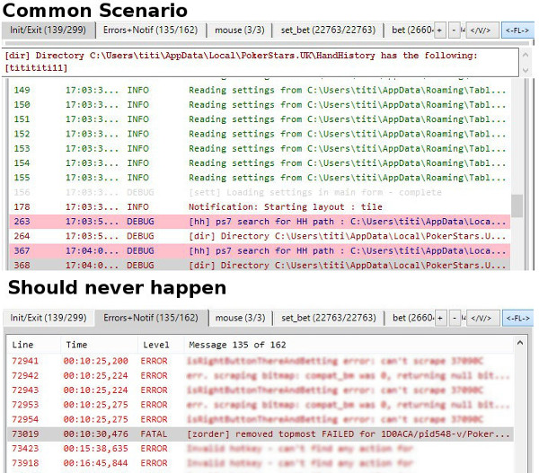
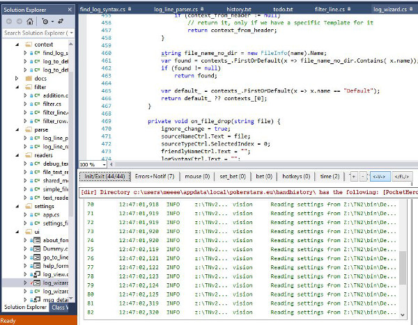
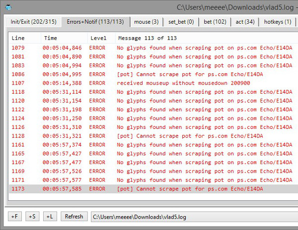
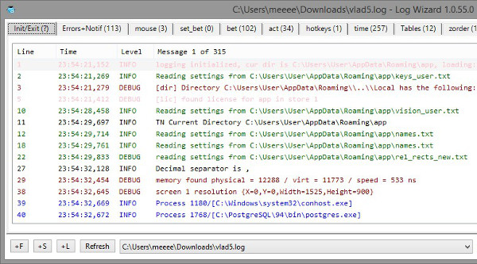
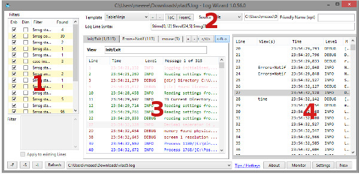
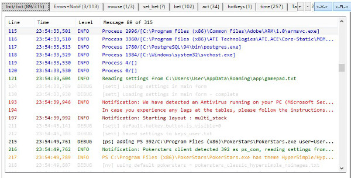
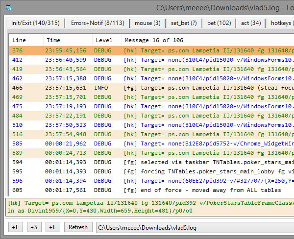
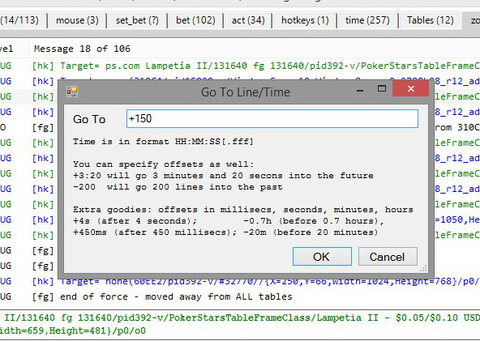
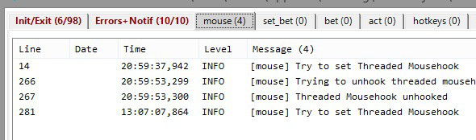
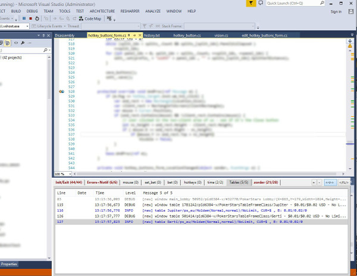

I created LogWizard to help anyone that really needs to deal with logs in order to hunt down bugs and/or issues that happen somewhere else (read = at customer site).
My team and I have created a rather large piece of software that is running on thousands of machines every day. Our customers, when they encounter an issue, send us their logs. The software is pretty big, we run 10+ threads, we log a lot of information, and parsing through it is pretty complex. Focusing on a certain issue (the customer's) has always been rather complicated.
The first thing we wanted was to identify common issues/problems at the blink of an eye - open the log, and have some crafted views that would show us instantly details if and when a common issue occurred.
The second thing was the exact opposite - if there are some issues that should never happen but did, we would want to know about it as well - once again, instantly.

When it comes to logging, it's a constant battle - as to what to log, and what not to log. You're never sure if the log message you're just about to turn off would end up being useful when run at the customer site. So why not log it? Unless that log message will clog your log file with tens of megabytes, it's probably a good idea to log it - and filter it out from within LogWizard (you can always go back to seing it at any time).
You should always log as much as possible, and the use LogWizard to create views (filters) for what you want to focus on.

At the core of LogWizard is the concept of a View. The View is just what the name suggests - a filtered subset of the existing log (file) that you are looking at. A View is a combination of Filters, each yielding some information. The Filters are OR-ed, and all the lines that match them are shown in the View. The first filter that matches gives the color of the line - it's a very easy way to distinguish the importance of each information.
As you get used to LogWizard, you'll use the color filter more and more - it's sooo powerful! And as you'll see, editing/adding/removing filters is easy, thus you can tweak colors on/off as your application gets developed.
What's more important is that as your focus changes, your Views don't have to get lost. Say you move to work on a different module of your application. Leave your existing View as is (maybe you'll need it later!), create a new View with what interests you at this time - and go from there.
You can also create Views for rare-occuring events - just so that you are notified if they ever happen. This is a very important feature. For example, I have View that shows me User-Interface Notifications, Errors, and Fatal Errors. When I open a log from a customer, the first thing I look at is - how many lines are in that view? If too many, that's the first thing I check.

Another View you could find useful is an overview of how the application is behaving. This is clearly dependant on your application - but you can log your application's start (version, when it started, where it was installed, etc.), the modules it's running, how much CPU is using, how your application ended and so on. When you get a log from your customer, this will give you just that - an overview of what you would want to ask the customer.

I developed LogWizard to show you as much information as possible - at any time, you can choose to remove any clutter information you don't care about. Here are all the panes available in Log Wizard:

You will usually want to see at most two panes: The Current View Pane and/or The Full Log Pane. Say Hi to Toggling Hotkeys:
(Note: Toggle Hotkeys work only when focus is not on a text box. Otherwise, they work as normal keys). Here's LogWizard with only the Current View Pane shown:

To Edit the filters in the current View, first make sure the Filter Pane is shown (if it's not shown, toggle it on with 'F' hotkey). When you drag-and-drop your first log file, it will have no views. The current View will show ALL lines. At this point, you'll want to filter what messages you want to see in this View.
You can add as many Filters as you want. Filters are matched top-down, and the first filter that matches will decide the color of the line (this also means that the Filters are OR-ed - if any filter matches, it will be shown in the current View).
To add/remove filters, you have the '+' and '-' buttons. Each Filter can consist of several lines. Each line can be:
In order for the filter to match, all conditions must yield true. So, within a filter, conditions are AND-ed. This also answers the question - what if I want my filters AND-ed? Simple, just make a new filter, and add there all the conditions you want AND-ed.
Condition lines are like this:
$[part-of-line] [condition] [text]
$[part-of-line] can be any of :
[condition] is any of:
Extra information lines:
The color line specifies what color to apply if the filter matches. The colors are in the #RRGGBB syntax, and some of the known colors are recognized. So you can say things like 'color red', 'color darkred', 'color #ee0022'.
By default, the filter is case-sensitive. If you want it to be case-insensitive, just add a line saying 'case-insensitive'.
Example:
case-insensitive $msg contains kaspersky $msg startswith process color green
This will create a case-insensitive filter that matches all lines that start with 'process' and contain 'kaspersky'. It will show all lines matching it in green color.
Finally, I added two more buttons: ToC / FromC (= To Clipboard / From Clipboard). ToC will copy ALL the filters from the current View to clipboard, and FromC will paste them. Say you have a colleague and you want to "send him" your current View - copy it to cliboard, send it to him. He'll paste it and voila - he's got the same View as yours!
I'm a developer - mouse is too slow. I want to do as much as possible with keys - hotkeys. As I've explained above: the 'F', 'S', 'L', 'T' - toggle the Panes ON/OFF.
In addition to that:
If you want to search within your Current View or Full Log, just press Ctrl-F. It's a rather straightforward dialog. One thing to note is that it will mark all lines containing the text with a slightly darker background, and you can also move to the next/previous line containing the text with F3/Shift-F3.
Here's how searching for "Lampetia" would look like:

To end the Find (thus, un-marking all lines containing the text), just press Escape.

It's the usual Ctrl-G, with a few twists:
Of course, LogWizard monitors the file constantly. As soon as new information is appended to the log, you see it instantly. And you see which Views contain new lines (except for the current View) - the View names turn to bold - which is what you'd expect.

And if you re-write the file, LogWizard instantly restarts from scratch - thus, when debugging, you can monitor your log file - not having to worry each time the log gets re-written.
Even more, I have added an option - "Bring to Top on Restart". If you check it, it will bring LogWizard to the top when the log file gets re-written.
The idea behind this is that usually, your IDE takes 100% of your screen, and for example, when debugging with Visual Studio, you'll look at Output window (which is docked somewhere). You would then resize LogWizard to be cover the Output Window, toggle the Title OFF, and everytime you restart debugging, LogWizard pops up where you would expect:

This way, when debugging, you can easily focus on the information you want.
I've made LogWizard to automatically save everything you do - any filter you modify, any view you add/delete/edit, everything is automatically saved and remembered.
Every Pane you've shown/hidden - LogWizard remembers it, and will show it in the same way next time you open it.
The log file you viewed last is opened by default. All the log files you've viewed - are kept in history. Change a setting, it's automatically saved.
All you need to do is - focus on Viewing your logs.
You probably won't need to know the following - but just in case you're wondering...
The Template decides the Views you see and what filters each View has. The default template is boringly called 'Default'. You can however create more templates to match different types of logs.
Say you work with 3 applications. Very likely, you'll want a template per application (each application will have its own Views).
To create a new template, you will toggle the Source Pane ON ('S' hotkey) and press the '+' next to the template. When choosing a name for the template, note that the template with automatically match any files containing that name. So, 'Pidgin' template will automatically match the 'Pidgin001.log'.
Most applications have a certain prefix to the log name. The template name should be just that prefix - an easy way for LogWizard to automatically select and use that template. Otherwise, once you're viewing a log, you can at any time select a different template.
You can copy the full template to clipboard ('ToC') or paste it from clipboard ('FromC') - so that you can easily share the way you View your log with your colleagues.
Another thing you can specify for a Template, is the syntax of the log files that belong to it. By default, LogWizard tries to automatically guess the file syntax. In case it guesses it wrong, you can manually set it. The syntax goes like this:
$part-of-line1[start,end] $part-of-line2[start,end] ... $part-of-lineN[start,end] $msg[start]
$part-of-line can by any of:
The start and end can be any of:
Example:
"$time[0,12] $ctx1[13,10] $level[24,5] $class[' ','- '] $msg"
Will correctly parse this line:
"11:06:13,944 main DEBUG TNControls.ls_util - load_save - on_change not implemented - enable_vision"
as
As of this time - 31st of August 2015 -, LogWizard is BETA. I welcome any feedback/suggestions you may have. In case you notice any issue, please let me know and I'll do my best to fix ASAP.
There are quite a few things I want to improve in time: